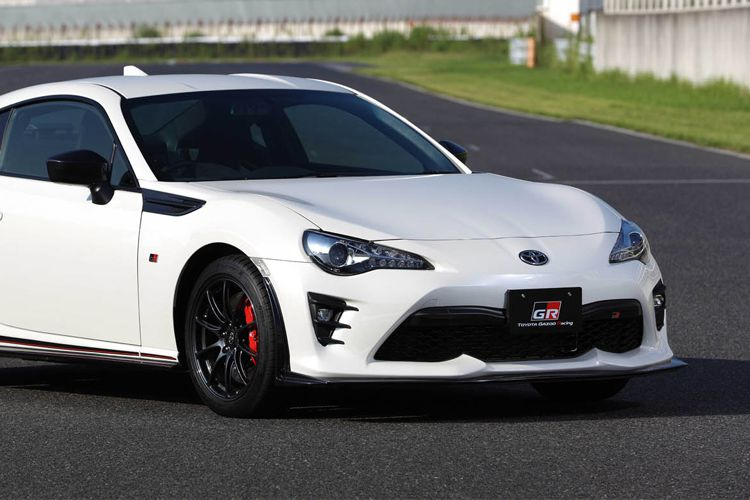

Toyota siapkan Platform Mobil Sport baru
STANLY RAVEL
KabarKabur.com - 26/09/2017, 07:02 WIB

Toyota dan Gazoo kembangkan platform baru
KabarKabur.com - Rencana Toyota meluncurkan varian baru bernuansa sporty dengan emblem GR akan segera terealisasi. Namun lebih dari itu, produsen raksasa asal Jepang ini juga sedang bersinergi dengan Gazoo Racing untuk membangun platform baru.
Langkah ini diambil untuk meneruskan kesuksesan Gazoo dalam membangun Yaris GRMN sebagai mobil harian bertenaga buas yang kini dipasarkan secara terbatas.
Meski tidak ada penjelasan secara spesifik menggenai detail sasis baru tersebut, tapi Shigeki Tomoyama selaku Presiden Gazoo Racing mengungkapkan bahwa sasis tersebut akan digunakan pada mobil sport Toyota.
"Dalam tahap berikutnya kami akan mendapatkan sebuah platform mobil sport baru. Nantinya kami akan mengenalkan sebuah mobil sport murni yang dapat digunakan untuk bersaing dengan kompetitor kelas atas," kata Shigeki yang dikutip dari Autoevolution, Senin (25/9/2017).
Dalam pengembangan platform baru Gazoo Racing bersama Toyota mengerahkan 200 teknisi handal. Mereka ditugaskan untuk melihat tiap perkembangan bahkan membuat versi replika untuk diuji.
Sayang baik pihak Toyota dan Gazoo belum berbicara lebih dalam mengenai keunggulan dari platform tersebut. Namun bila melihat dari sisi pengembangan mobil sport, umumnya secara bobot akan lebih ringgan dari yang digunakan saat ini.
Besar kemungkinan platform baru tersebut akan digunakan pada Toyota 86 sebagai tahap awal. Bahkan rumor dari salah satu media di Jepang mengatakan Mazda juga menggunakan platform milik Toyota untuk dua model terbaru yang akan datang menggunakan mesin rotari.
penulis :Stanly Ravel
Editor :Agung Kurniawan
sumber : autoevolution